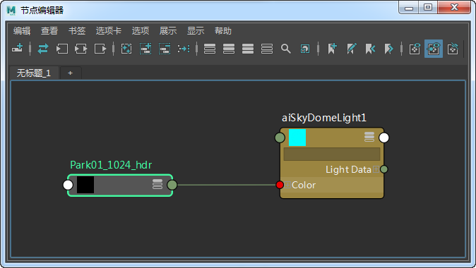
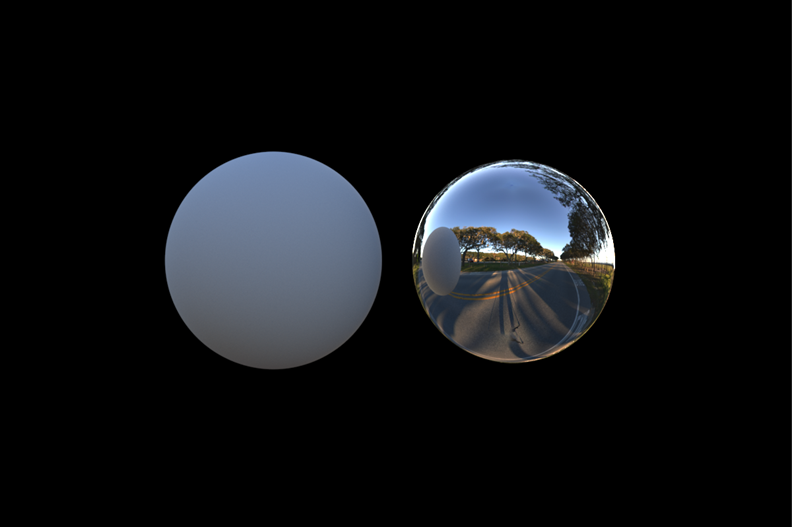

首先，我们对 HDR 贴图进行测试。我们并不是立即开始渲染汽车（此渲染会花费较长时间），而是渲染两个球体。一个球体用于测试照明，另一个球体用于测试光泽反射。
为其中一个球体指定一个 standard_surface 着色器，如下图所示。将 specular_weight 减小到 0。这将用于测试照明和阴影。根据 HDR 贴图的源，可能需要增加或减少场景中照明的曝光。尝试匹配拍摄现场照明条件时，此灰色球体也可以证明很有用（稍后，可在拍摄现场使用灰色镀铬球体以匹配 3D 环境中的照明条件）。
将另一个 standard_surface 着色器指定给另一个球体。要使此材质看起来像镀铬，请将“金属度”(Metalness)*增大到 1，将 *base_weight 增大到 1，以及将 specular_roughness 减小到 0。
创建一个 skydome_light，并将 HDR 贴图连接到 skydome_light.color_。我们使用的 HDR 贴图采用的是_“经度-纬度”(Lat-long)_格式。增加_“分辨率”(Resolution)_以匹配 HDR 贴图较大的宽度分辨率。在本例中，分辨率为 4096。默认情况下，此分辨率设置为 1000，这意味着如果您使用的环境贴图大于 1000 像素，则应相应地调整 _skydome_light 中的“分辨率”(Resolution)。例如，如果您的环境贴图为 3000*1500 像素，则 skydome_light.resolution 应设置为 3000，依此类推。

HDR 贴图连接到 skydome_light 的“颜色”(Color)属性
